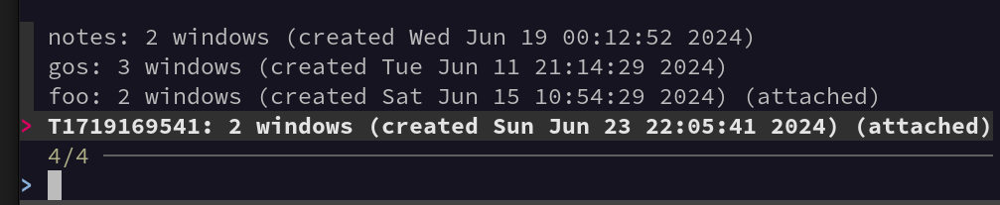
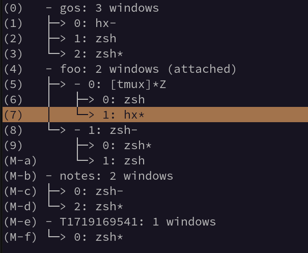

Terminal multiplexing with tmux - Z-Shell edition
Published at 2024-06-23T22:41:59+03:00, last updated Fri 02 May 00:10:49 EEST 2025
This is the Z-Shell version. There is also a Fish version:
./2025-05-02-terminal-multiplexing-with-tmux-fish-edition.html
Tmux (Terminal Multiplexer) is a powerful, terminal-based tool that manages multiple terminal sessions within a single window. Here are some of its primary features and functionalities:
- Session management
- Window and Pane management
- Persistent Workspace
- Customization
https://github.com/tmux/tmux/wiki
_______
|.-----.|
|| Tmux||
||_.-._||
`--)-(--`
__[=== o]___
|:::::::::::|\
jgs `-=========-`()
mod. by Paul B.
Table of Contents
Before continuing...
Before continuing to read this post, I encourage you to get familiar with Tmux first (unless you already know the basics). You can go through the official getting started guide:
https://github.com/tmux/tmux/wiki/Getting-Started
I can also recommend this book (this is the book I got started with with Tmux):
https://pragprog.com/titles/bhtmux2/tmux-2/
Over the years, I have built a couple of shell helper functions to optimize my workflows. Tmux is extensively integrated into my daily workflows (personal and work). I had colleagues asking me about my Tmux config and helper scripts for Tmux several times. It would be neat to blog about it so that everyone interested in it can make a copy of my configuration and scripts.
The configuration and scripts in this blog post are only the non-work-specific parts. There are more helper scripts, which I only use for work (and aren't really useful outside of work due to the way servers and clusters are structured there).
Tmux is highly configurable, and I think I am only scratching the surface of what is possible with it. Nevertheless, it may still be useful for you. I also love that Tmux is part of the OpenBSD base system!
Shell aliases
I am a user of the Z-Shell (zsh), but I believe all the snippets mentioned in this blog post also work with Bash.
https://www.zsh.org
For the most common Tmux commands I use, I have created the following shell aliases:
alias tm=tmux
alias tl='tmux list-sessions'
alias tn=tmux::new
alias ta=tmux::attach
alias tx=tmux::remote
alias ts=tmux::search
alias tssh=tmux::cluster_ssh
Note all tmux::...; those are custom shell functions doing certain things, and they aren't part of the Tmux distribution. But let's run through every alias one by one.
The first two are pretty straightforward. tm is simply a shorthand for tmux, so I have to type less, and tl lists all Tmux sessions that are currently open. No magic here.
The tn alias - Creating a new session
The tn alias is referencing this function:
# Create new session and if already exists attach to it
tmux::new () {
readonly session=$1
local date=date
if where gdate &>/dev/null; then
date=gdate
fi
tmux::cleanup_default
if [ -z "$session" ]; then
tmux::new T$($date +%s)
else
tmux new-session -d -s $session
tmux -2 attach-session -t $session || tmux -2 switch-client -t $session
fi
}
alias tn=tmux::new
There is a lot going on here. Let's have a detailed look at what it is doing. As a note, the function relies on GNU Date, so MacOS is looking for the gdate commands to be available. Otherwise, it will fall back to date. You need to install GNU Date for Mac, as it isn't installed by default there. As I use Fedora Linux on my personal Laptop and a MacBook for work, I have to make it work for both.
First, a Tmux session name can be passed to the function as a first argument. That session name is only optional. Without it, Tmux will select a session named T$($date +%s) as a default. Which is T followed by the UNIX epoch, e.g. T1717133796.
Cleaning up default sessions automatically
Note also the call to tmux::cleanup_default; it would clean up all already opened default sessions if they aren't attached. Those sessions were only temporary, and I had too many flying around after a while. So, I decided to auto-delete the sessions if they weren't attached. If I want to keep sessions around, I will rename them with the Tmux command prefix-key $. This is the cleanup function:
tmux::cleanup_default () {
local s
tmux list-sessions | grep '^T.*: ' | grep -F -v attached |
cut -d: -f1 | while read -r s; do
echo "Killing $s"
tmux kill-session -t "$s"
done
}
The cleanup function kills all open Tmux sessions that haven't been renamed properly yet—but only if they aren't attached (e.g., don't run in the foreground in any terminal). Cleaning them up automatically keeps my Tmux sessions as neat and tidy as possible.
Renaming sessions
Whenever I am in a temporary session (named T....), I may decide that I want to keep this session around. I have to rename the session to prevent the cleanup function from doing its thing. That's, as mentioned already, easily accomplished with the standard prefix-key $ Tmux command.
The ta alias - Attaching to a session
This alias refers to the following function, which tries to attach to an already-running Tmux session.
tmux::attach () {
readonly session=$1
if [ -z "$session" ]; then
tmux attach-session || tmux::new
else
tmux attach-session -t $session || tmux::new $session
fi
}
alias ta=tmux::attach
If no session is specified (as the argument of the function), it will try to attach to the first open session. If no Tmux server is running, it will create a new one with tmux::new. Otherwise, with a session name given as the argument, it will attach to it. If unsuccessful (e.g., the session doesn't exist), it will be created and attached to.
The tr alias - For a nested remote session
This SSHs into the remote server specified and then, remotely on the server itself, starts a nested Tmux session. So we have one Tmux session on the local computer and, inside of it, an SSH connection to a remote server with a Tmux session running again. The benefit of this is that, in case my network connection breaks down, the next time I connect, I can continue my work on the remote server exactly where I left off. The session name is the name of the server being SSHed into. If a session like this already exists, it simply attaches to it.
tmux::remote () {
readonly server=$1
tmux new -s $server "ssh -t $server 'tmux attach-session || tmux'" || \
tmux attach-session -d -t $server
}
alias tr=tmux::remote
Change of the Tmux prefix for better nesting
To make nested Tmux sessions work smoothly, one must change the Tmux prefix key locally or remotely. By default, the Tmux prefix key is Ctrl-b, so Ctrl-b $, for example, renames the current session. To change the prefix key from the standard Ctrl-b to, for example, Ctrl-g, you must add this to the tmux.conf:
set-option -g prefix C-g
This way, when I want to rename the remote Tmux session, I have to use Ctrl-g $, and when I want to rename the local Tmux session, I still have to use Ctrl-b $. In my case, I have this deployed to all remote servers through a configuration management system (out of scope for this blog post).
There might also be another way around this (without reconfiguring the prefix key), but that is cumbersome to use, as far as I remember.
The ts alias - Searching sessions with fuzzy finder
Despite the fact that with tmux::cleanup_default, I don't leave a huge mess with trillions of Tmux sessions flying around all the time, at times, it can become challenging to find exactly the session I am currently interested in. After a busy workday, I often end up with around twenty sessions on my laptop. This is where fuzzy searching for session names comes in handy, as I often don't remember the exact session names.
tmux::search () {
local -r session=$(tmux list-sessions | fzf | cut -d: -f1)
if [ -z "$TMUX" ]; then
tmux attach-session -t $session
else
tmux switch -t $session
fi
}
alias ts=tmux::search
All it does is list all currently open sessions in fzf, where one of them can be searched and selected through fuzzy find, and then either switch (if already inside a session) to the other session or attach to the other session (if not yet in Tmux).
You must install the fzf command on your computer for this to work. This is how it looks like:

The tssh alias - Cluster SSH replacement
Before I used Tmux, I was a heavy user of ClusterSSH, which allowed me to log in to multiple servers at once in a single terminal window and type and run commands on all of them in parallel.
https://github.com/duncs/clusterssh
However, since I started using Tmux, I retired ClusterSSH, as it came with the benefit that Tmux only needs to be run in the terminal, whereas ClusterSSH spawned terminal windows, which aren't easily portable (e.g., from a Linux desktop to macOS). The tmux::cluster_ssh function can have N arguments, where:
- ...the first argument will be the session name (see tmux::tssh_from_argument helper function), and all remaining arguments will be server hostnames/FQDNs to connect to simultaneously.
- ...or, the first argument is a file name, and the file contains a list of hostnames/FQDNs (see tmux::ssh_from_file helper function)
This is the function definition behind the tssh alias:
tmux::cluster_ssh () {
if [ -f "$1" ]; then
tmux::tssh_from_file $1
return
fi
tmux::tssh_from_argument $@
}
alias tssh=tmux::cluster_ssh
This function is just a wrapper around the more complex tmux::tssh_from_file and tmux::tssh_from_argument functions, as you have learned already. Most of the magic happens there.
The tmux::tssh_from_argument helper
This is the most magic helper function we will cover in this post. It looks like this:
tmux::tssh_from_argument () {
local -r session=$1; shift
local first_server=$1; shift
tmux new-session -d -s $session "ssh -t $first_server"
if ! tmux list-session | grep "^$session:"; then
echo "Could not create session $session"
return 2
fi
for server in "${@[@]}"; do
tmux split-window -t $session "tmux select-layout tiled; ssh -t $server"
done
tmux setw -t $session synchronize-panes on
tmux -2 attach-session -t $session | tmux -2 switch-client -t $session
}
It expects at least two arguments. The first argument is the session name to create for the clustered SSH session. All other arguments are server hostnames or FQDNs to which to connect. The first one is used to make the initial session. All remaining ones are added to that session with tmux split-window -t $session.... At the end, we enable synchronized panes by default, so whenever you type, the commands will be sent to every SSH connection, thus allowing the neat ClusterSSH feature to run commands on multiple servers simultaneously. Once done, we attach (or switch, if already in Tmux) to it.
Sometimes, I don't want the synchronized panes behavior and want to switch it off temporarily. I can do that with prefix-key p and prefix-key P after adding the following to my local tmux.conf:
bind-key p setw synchronize-panes off
bind-key P setw synchronize-panes on
The tmux::tssh_from_file helper
This one sets the session name to the file name and then reads a list of servers from that file, passing the list of servers to tmux::tssh_from_argument as the arguments. So, this is a neat little wrapper that also enables me to open clustered SSH sessions from an input file.
tmux::tssh_from_file () {
local -r serverlist=$1; shift
local -r session=$(basename $serverlist | cut -d. -f1)
tmux::tssh_from_argument $session $(awk '{ print $1} ' $serverlist | sed 's/.lan./.lan/g')
}
tssh examples
To open a new session named fish and log in to 4 remote hosts, run this command (Note that it is also possible to specify the remote user):
$ tssh fish blowfish.buetow.org fishfinger.buetow.org \
fishbone.buetow.org user@octopus.buetow.org
To open a new session named manyservers, put many servers (one FQDN per line) into a file called manyservers.txt and simply run:
$ tssh manyservers.txt
Common Tmux commands I use in tssh
These are default Tmux commands that I make heavy use of in a tssh session:
- Press prefix-key DIRECTION to switch panes. DIRECTION is by default any of the arrow keys, but I also configured Vi keybindings.
- Press prefix-key <space> to change the pane layout (can be pressed multiple times to cycle through them).
- Press prefix-key z to zoom in and out of the current active pane.
Copy and paste workflow
As you will see later in this blog post, I have configured a history limit of 1 million items in Tmux so that I can scroll back quite far. One main workflow of mine is to search for text in the Tmux history, select and copy it, and then switch to another window or session and paste it there (e.g., into my text editor to do something with it).
This works by pressing prefix-key [ to enter Tmux copy mode. From there, I can browse the Tmux history of the current window using either the arrow keys or vi-like navigation (see vi configuration later in this blog post) and the Pg-Dn and Pg-Up keys.
I often search the history backwards with prefix-key [ followed by a ?, which opens the Tmux history search prompt.
Once I have identified the terminal text to be copied, I enter visual select mode with v, highlight all the text to be copied (using arrow keys or Vi motions), and press y to yank it (sorry if this all sounds a bit complicated, but Vim/NeoVim users will know this, as it is pretty much how you do it there as well).
For v and y to work, the following has to be added to the Tmux configuration file:
bind-key -T copy-mode-vi 'v' send -X begin-selection
bind-key -T copy-mode-vi 'y' send -X copy-selection-and-cancel
Once the text is yanked, I switch to another Tmux window or session where, for example, a text editor is running and paste the yanked text from Tmux into the editor with prefix-key ]. Note that when pasting into a modal text editor like Vi or Helix, you would first need to enter insert mode before prefix-key ] would paste anything.
Tmux configurations
Some features I have configured directly in Tmux don't require an external shell alias to function correctly. Let's walk line by line through my local ~/.config/tmux/tmux.conf:
source ~/.config/tmux/tmux.local.conf
set-option -g allow-rename off
set-option -g history-limit 100000
set-option -g status-bg '#444444'
set-option -g status-fg '#ffa500'
set-option -s escape-time 0
There's yet to be much magic happening here. I source a tmux.local.conf, which I sometimes use to override the default configuration that comes from the configuration management system. But it is mostly just an empty file, so it doesn't throw any errors on Tmux startup when I don't use it.
I work with many terminal outputs, which I also like to search within Tmux. So, I added a large enough history-limit, enabling me to search backwards in Tmux for any output up to a million lines of text.
Besides changing some colours (personal taste), I also set escape-time to 0, which is just a workaround. Otherwise, my Helix text editor's ESC key would take ages to trigger within Tmux. I am trying to remember the gory details. You can leave it out; if everything works fine for you, leave it out.
The next lines in the configuration file are:
set-window-option -g mode-keys vi
bind-key -T copy-mode-vi 'v' send -X begin-selection
bind-key -T copy-mode-vi 'y' send -X copy-selection-and-cancel
I navigate within Tmux using Vi keybindings, so the mode-keys is set to vi. I use the Helix modal text editor, which is close enough to Vi bindings for simple navigation to feel "native" to me. (By the way, I have been a long-time Vim and NeoVim user, but I eventually switched to Helix. It's off-topic here, but it may be worth another blog post once.)
The two bind-key commands make it so that I can use v and y in copy mode, which feels more Vi-like (as already discussed earlier in this post).
The next set of lines in the configuration file are:
bind-key h select-pane -L
bind-key j select-pane -D
bind-key k select-pane -U
bind-key l select-pane -R
bind-key H resize-pane -L 5
bind-key J resize-pane -D 5
bind-key K resize-pane -U 5
bind-key L resize-pane -R 5
These allow me to use prefix-key h, prefix-key j, prefix-key k, and prefix-key l for switching panes and prefix-key H, prefix-key J, prefix-key K, and prefix-key L for resizing the panes. If you don't know Vi/Vim/NeoVim, the letters hjkl are commonly used there for left, down, up, and right, which is also the same for Helix, by the way.
The next set of lines in the configuration file are:
bind-key c new-window -c '#{pane_current_path}'
bind-key F new-window -n "session-switcher" "tmux list-sessions | fzf | cut -d: -f1 | xargs tmux switch-client -t"
bind-key T choose-tree
The first one is that any new window starts in the current directory. The second one is more interesting. I list all open sessions in the fuzzy finder. I rely heavily on this during my daily workflow to switch between various sessions depending on the task. E.g. from a remote cluster SSH session to a local code editor.
The third one, choose-tree, opens a tree view in Tmux listing all sessions and windows. This one is handy to get a better overview of what is currently running in any local Tmux session. It looks like this (it also allows me to press a hotkey to switch to a particular Tmux window):

The last remaining lines in my configuration file are:
bind-key p setw synchronize-panes off
bind-key P setw synchronize-panes on
bind-key r source-file ~/.config/tmux/tmux.conf \; display-message "tmux.conf reloaded"
We discussed synchronized panes earlier. I use it all the time in clustered SSH sessions. When enabled, all panes (remote SSH sessions) receive the same keystrokes. This is very useful when you want to run the same commands on many servers at once, such as navigating to a common directory, restarting a couple of services at once, or running tools like htop to quickly monitor system resources.
The last one reloads my Tmux configuration on the fly.
E-Mail your comments to paul@nospam.buetow.org :-)
Other related posts are:
2026-02-02 A tmux popup editor for Cursor Agent CLI prompts
2025-05-02 Terminal multiplexing with tmux - Fish edition
2024-06-23 Terminal multiplexing with tmux - Z-Shell edition (You are currently reading this)
Back to the main site